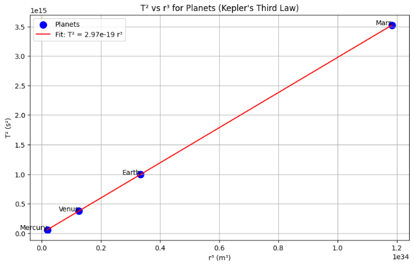

Analysis of the Relationship Between \(T^2\) and \(r^3\) in Circular Motion and Its Implications for Astronomy
Gravitational Force: Governed by Newton’s Universal Law of Gravitation:$$ F = \frac{G M m}{r^2} $$Symbols:
\(F\): Gravitational force (N)
\(G\): Gravitational constant (\(m^3 kg^{-1} s^{-2}\))
\(M\): Mass of the central body (kg)
\(m\): Mass of the orbiting body (kg)
\(r\): Orbital radius (m)
Centripetal Force: For circular motion, gravity sense as the centripetal force:$$ \frac{m v^2}{r} = \frac{G M m}{r^2} $$Symbols:
\(v\): Orbital velocity (\(m s^{-1}\))
Other symbols as defined above.
Derivation of \(T^2\) Kepler Formula
Step 1: Orbital velocity for circular motion is the circumference divided by the period:$$ v = \frac{2\pi r}{T} \((Symbols:
\(v\): Orbital velocity (\)m s^{-1}\))
\(r\): Orbital radius (m)
\(T\): Orbital period (s)
Step 2: Substitute \(v\) into the centripetal force equation: \(\(\frac{m \left(\frac{2\pi r}{T}\right)^2}{r} = \frac{G M m}{r^2}\)\) Simplify: \(\(\frac{m \cdot 4\pi^2 r^2}{T^2 r} = \frac{G M m}{r^2}\)\) \(\(\frac{4\pi^2 r}{T^2} = \frac{G M}{r^2}\)\) Symbols:
\(m\): Mass of the orbiting body (kg)
\(G\): Gravitational constant (\(m^3 kg^{-1} s^{-2}\))
\(M\): Mass of the central body (kg)
\(r\): Orbital radius (m)
\(T\): Orbital period (s)
Step 3: Rearrange: \(\(4\pi^2 r^3 = G M T^2\)\) \(\(T^2 = \frac{4\pi^2}{G M} r^3\)\) Thus, \(T^2 \propto r^3\), which is Kepler’s Third Law for circular orbits, with constant \(k = \frac{4\pi^2}{G M}\).
Symbols:
\(T\): Orbital period (s)
\(r\): Orbital radius (m)
\(G\): Gravitational constant (\(m^3 kg^{-1} s^{-2}\))
\(M\): Mass of the central body (kg)
\(k\): Proportionality constant (\(s^2 m^{-3}\))
Verification with Planetary Data
Planets: Mercury (\(r = 0.387098\) AU, \(T = 0.240846\) yr), Venus (\(r = 0.723332\) AU, \(T = 0.615198\) yr), Earth (\(r = 1.000000\) AU, \(T = 1.000000\) yr), Mars (\(r = 1.523680\) AU, \(T = 1.88082\) yr).
Unit Conversion:
\(1\) AU = \(1.496 \times 10^{11}\) m.
\(1\) yr = \(3.15576 \times 10^7\) s.
Data: Compute \(T^2\) (in \(s^2\)) and \(r^3\) (in \(m^3\)) for each planet to verify \(T^2 \propto r^3\).
\(T^2\) vs \(r^3\) Plot
A plot of \(T^2\) vs \(r^3\) for Mercury, Venus, Earth, and Mars yields a straight line, confirming \(T^2 = k r^3\).

The straight line confirms the proportionality, unlike incorrect \(T^2\) vs \(r\) plots.
Calculate Mass of the Sun
Using Earth’s Orbit:
\(r = 1.496 \times 10^{11}\) m, \(T = 3.15576 \times 10^7\) s.
Formula: $$ M = \frac{4\pi^2 r^3}{G T^2} $$
Calculation:$$ M_{\text{Sun}} = \frac{4 \pi^2 (1.496 \times 10^{11})^3}{6.67430 \times 10^{-11} (3.15576 \times 10^7)^2} \approx 1.989 \times 10^{30} , \text{kg} $$
Result: Mass of the Sun = \(1.99 \times 10^{30}\) kg.Symbols:
\(M\): Mass of the Sun (kg)
\(r\): Orbital radius (m)
\(T\): Orbital period (s)
\(G\): Gravitational constant (\(m^3 kg^{-1} s^{-2}\))
Calculate Mass of Earth
Using Geostationary Satellite:
\(r = 42,164 \times 10^3\) m, \(T = 24 \times 3600 = 86,400\) s.
Formula: $$ M = \frac{4\pi^2 r^3}{G T^2} $$
Calculation:$$ M_{\text{Earth}} = \frac{4 \pi^2 (42,164 \times 10^3)^3}{6.67430 \times 10^{-11} (86,400)^2} \approx 5.972 \times 10^{24} , \text{kg} $$
Result: Mass of Earth = \(5.97 \times 10^{24}\) kg.
Symbols:
\(M\): Mass of the Earth (kg)
\(r\): Orbital radius (m)
\(T\): Orbital period (s)
\(G\): Gravitational constant (\(m^3 kg^{-1} s^{-2}\))
Assumptions and Limitations
Circular Orbits: Assumes circular orbits; for elliptical orbits, use semi-major axis (\(a\)) where \(T^2 \propto a^3\). Two-Body System: Assumes the central body’s mass dominates (\(m \ll M\)). No Perturbations: Ignores external forces from other bodies or relativistic effects.
Astronomical Implications
Mass Determination: Enables calculation of central body masses (e.g., stars, planets). Exoplanet Detection: Infers star masses from exoplanet orbits. Satellite Orbits: Designs specific orbits (e.g., geostationary satellites). Galactic Dynamics: Deviations from \(T^2 \propto r^3\) indicate dark matter in galaxies. Historical Significance: Kepler’s Third Law supported the heliocentric model.
Summary
Kepler’s Third Law (\(T^2 \propto r^3\)) is derived from gravitational and centripetal forces, verified by a straight-line \(T^2\) vs \(r^3\) plot for Mercury, Venus, Earth, and Mars. Mass calculations yield \(M_{\text{Sun}} \approx 1.99 \times 10^{30}\) kg and \(M_{\text{Earth}} \approx 5.97 \times 10^{24}\) kg. The relationship is crucial for astronomy, enabling mass measurements, orbit design, exoplanet detection, and insights into cosmic structures.